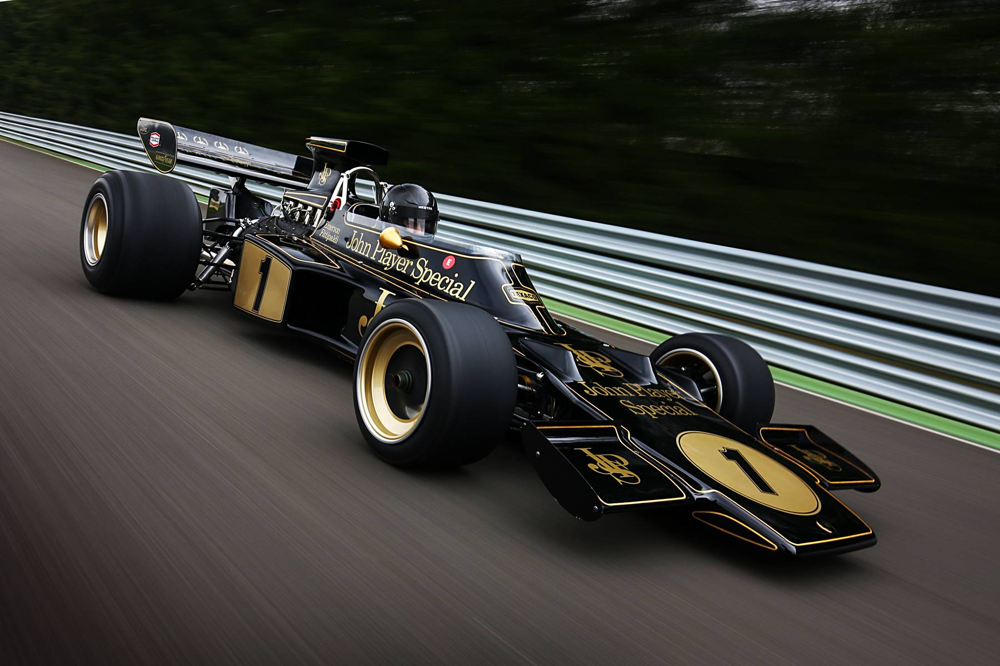

Through The Lenses of History
The historic rise of Formula One told from the perspectives of its greatest drivers : i'm a huge fan of f1 so i am making this website in that theme. the history of Formula One stretches all the way from the days of the maestro fangio to niki lauda's zenith in ferrari the magical driving of ayrton senna,the german legend micheal schumacher reaching the days of lewis hamilton and max verstappen today
